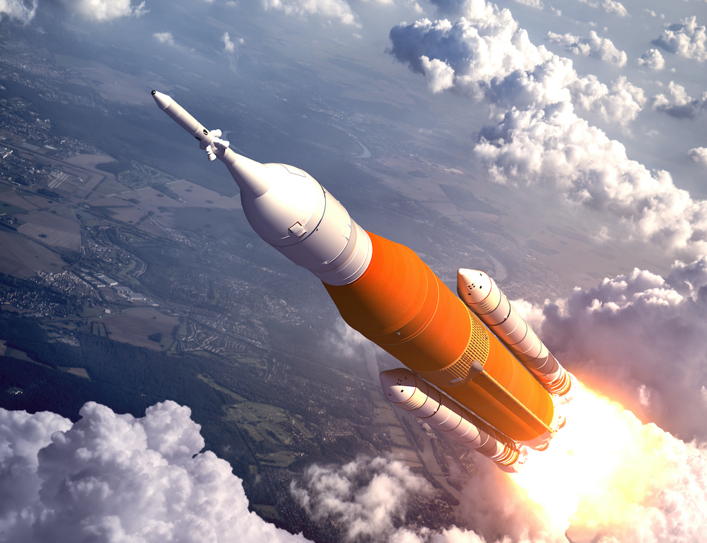

Rocket launches carry spacecraft into space.

Robotic missions help us explore distant planets safely.
Space missions have allowed humans to explore beyond Earth, land on the Moon, and send probes deep into the universe.

Rocket launches carry spacecraft into space.
Robotic missions help us explore distant planets safely.
Space missions contribute to scientific discovery, technological advancement, and our understanding of the universe. They also inspire future generations to explore and innovate.